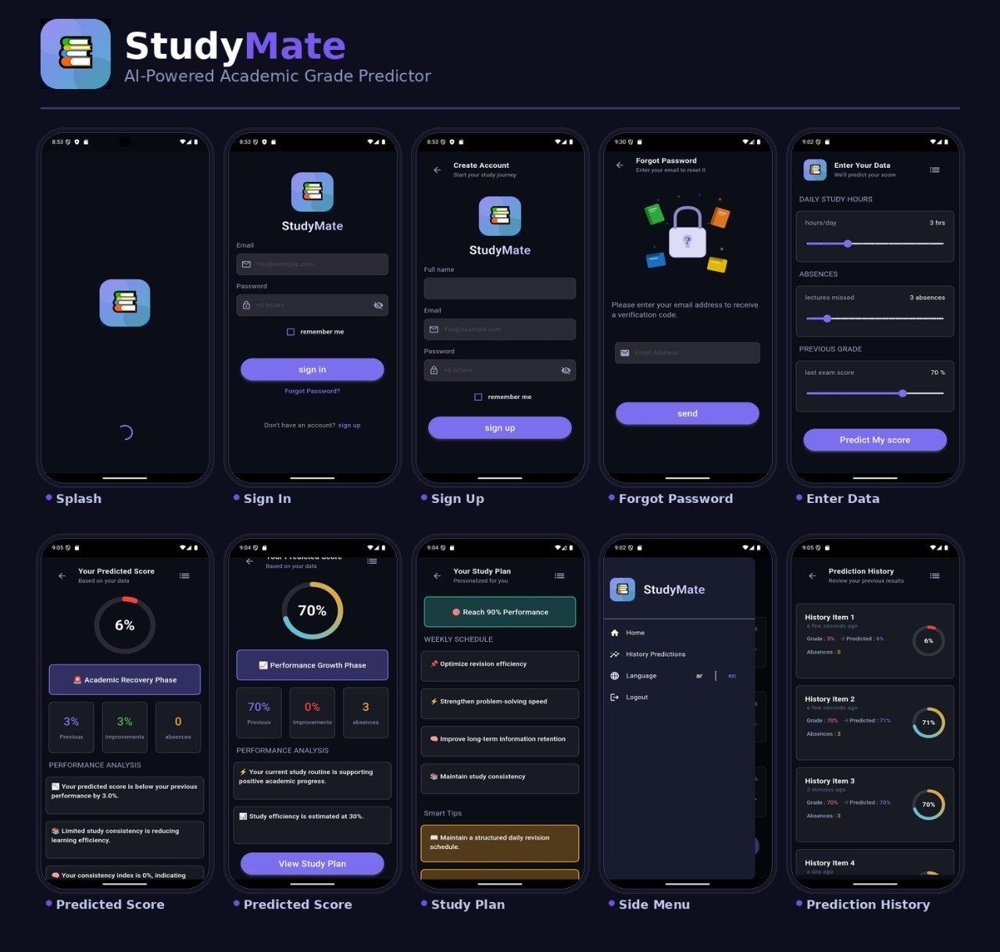

Independent Flutter Application
Mova
Bilingual movie discovery, search, filtering, watchlists, Firebase-backed user services, and media workflows.
FlutterFirebaseTMDB APIProvider
I build polished mobile products, data-driven systems, and applied AI experiences—from Flutter and Firebase integrations to deep-learning deployment and interactive analytics.
My work connects software engineering, data, and applied intelligence into practical end-to-end solutions. I focus on maintainable implementation, measurable results, responsive UX, and clear technical decisions.
The homepage stays lightweight: project demos do not initialize until you choose to open them. Each card gives a fast recruiter-level overview, with technical details available separately.
Bilingual movie discovery, search, filtering, watchlists, Firebase-backed user services, and media workflows.

Personal finance workflows combining planning, expenses, goals, receipts, voice interaction, and integrated services.

Flutter application with a custom neural-network regression model and on-device TensorFlow Lite inference.

Interactive analysis of World Bank enrollment data across six countries and 2016–2019.
Leakage-aware churn modelling with engineered features, model comparison, GridSearchCV, and held-out evaluation.
TensorFlow regression experiment with leakage-aware preprocessing, regularization, early stopping, and model export.
Skills are grouped by how they are applied across projects—not by arbitrary proficiency percentages.
Product-focused mobile engineering and integrated user journeys.
Structured analysis from preparation through evaluation.
Model development connected to product experiences.
Interactive reporting and clear data storytelling.
Tools used across mobile, data, and collaborative delivery.
Credentials are separated by what they represent: professional training, competition achievements, workshops, and community activity. A future Machine Learning certificate can be added without changing the structure.
Digital Opportunity Trust Jordan
Represented Al al-Bayt University
Qafza Towards the Future Information Technology Company
May 2026
2024–2025
June 17, 2026
100 hours · 2025
160 hours · 2021–2022
Represented Al al-Bayt University · Sep 26–27, 2025
Successfully passed Phase 1 · July 2026
September 20, 2025
3 hours · July 20, 2024
Community and volunteering credentials will stay separate from technical training. Additional verified certificates can be added here later without restructuring the portfolio.
Academic foundation, intensive Flutter training, multidisciplinary product delivery, competitions, and continuous technical development.
Al al-Bayt University · Mafraq, Jordan
130 hours with DOT Jordan plus 80 hours with Tuned Applications Academy.
Deep-learning model development, TensorFlow Lite deployment, machine-learning evaluation, and Power BI analytics alongside mobile engineering.